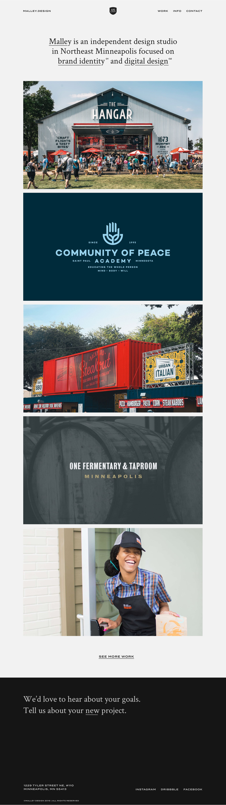
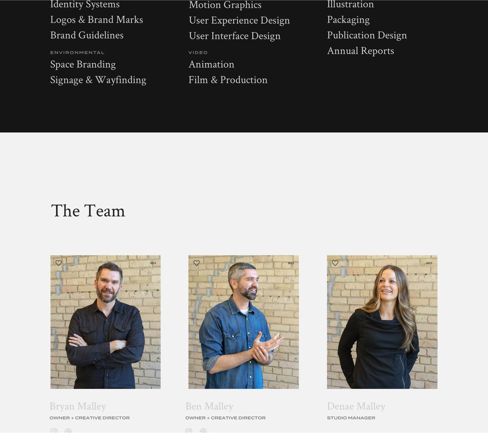
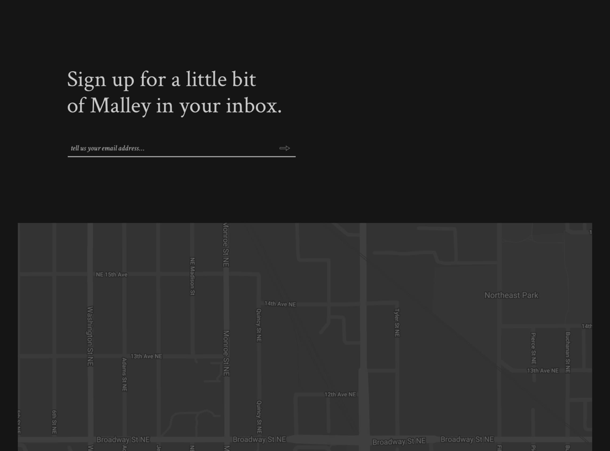
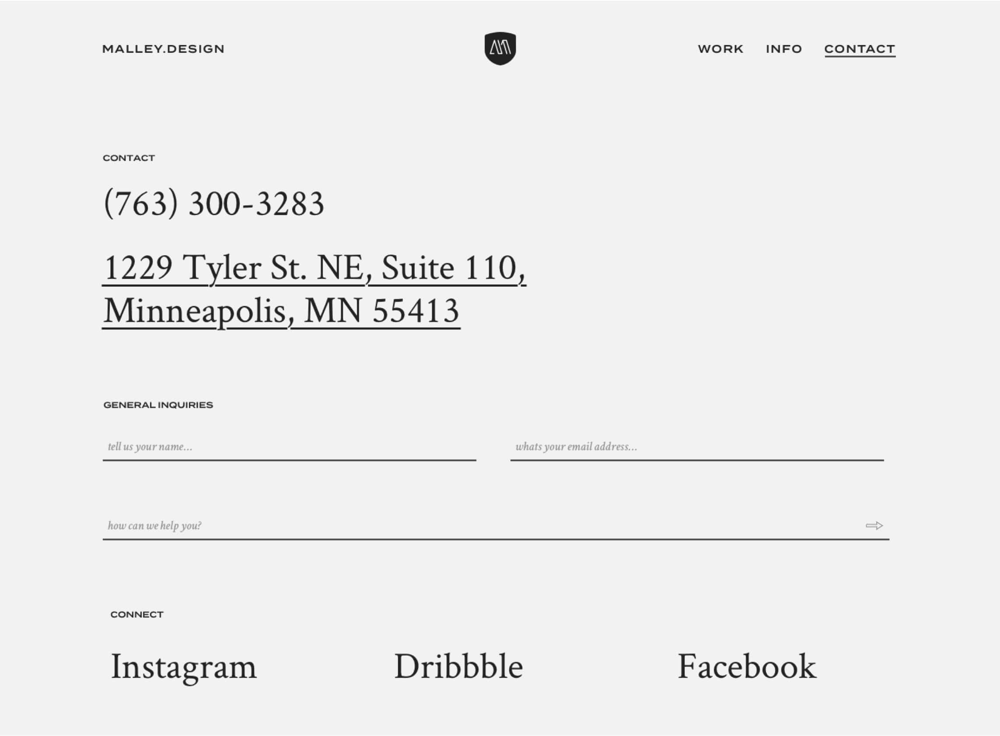
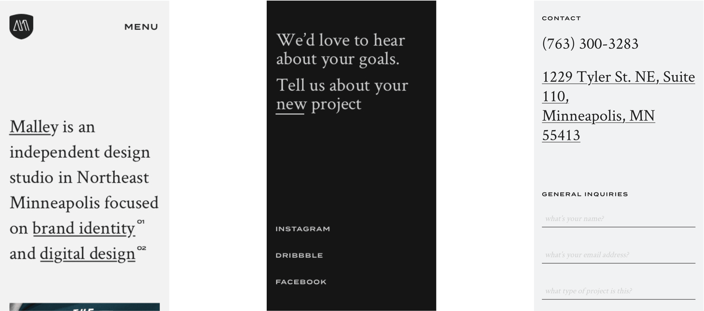

Malley.Design design
At Malley, we wanted to take a deep dive into our own personal brand. The updated Malley website was a push for a more simple experience for our users, with the one goal of helping our prospects through the intial stages of the process. During the brand updates we wanted to strip out all previous color to allow the work itself speak towards our culture. The website is a direct reflection of this outcome.





